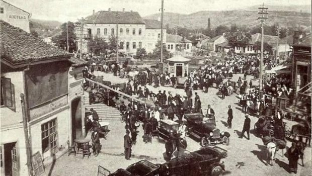

Pirotski kraj leži između dva velika grada međaša, Niša i Sofije, antičkih Naissus i Serdica, koji su u dugim razdobljima praistorije i istorije ovoga kraja u mnogome određivali okvire njegovog razvoja. Oblasti oko današnjeg Pirota predstavljaju veoma značajnu kariku za poznavawe starih naroda koji su živeli u centralnim oblastima Balkana stoga, jer se nalaze na sredokraći, u graničnoj zoni dveju jezičkih sfera, latinske na zapadu i grčke na istoku, na terenu na kome su se sukobljavali i mešali uticaji dvaju moćnih balkanskih naroda, tračkih i ilirskih, na veoma prometnoj saobraćajnici koja povezuje Evropu sa Azijom. Istraživanjima raznih naunih disciplina pruža se vrlo mnogo pogodnosti za upoznavanje različitih uticaja života različitih naroda u uslovima koegzistencije i simbioze, naroda koji su žilavo održali svoju tradiciju, bilo da je u pitanju jezik, onomastika ili toponomastika, materijalna ili duhovna kultura.
U viševekovnoj istoriji, od propasti Rimskog carstva i dolaska Slovena na Balkan, u prošlosti pirotskog kraja razlikovali su se periodi vizantijske, bugarske, srpske i turske uprave, pod kojom je Pirot ostao sve do kraja 1877. godine, sa izuzetkom ratne 1689/1690. kada su ga privremeno zauzeli Austrijanci.
U novijoj istoriji Pirota, njegov društveni život i političke prilike stajale su u tesnoj vezi sa događajima i politikom oslobođene Srbije 1804. godine. Do konačnog oslobođenja od Turaka pirotsko stanovništvo održavalo je višestruke odnose sa Srbijom, i njegova prošlost u XIX veku odvijala se pod znatnim posrednim ili direktnim uticajima iz oslobođene Srbije. Piroćanci su uz pomoć Srbije pokušali da se oslobode Turske uprave u čuvenoj Pirotskoj buni 1836. i antifeudalnom narodnom ustanku 1841. godine. Oslobođenje Pirota i okoline od Turske uprave 28. decembra 1877. i ulazak u sastav Kneževine Srbije, kao njene etničke i nacionalne teritorije, odredilo je Pirotu nove puteve razvitka i od tada kroz poslednje decenije XIX i kasnije u XX veku, istorija Pirota i pirotskog kraja uklapa se u opšti tok istorije srpskog naroda i deli njegovu istorijsku sudbinu.
Ponišavljem je vodio važan vojnički i trgovački put iz Evrope u Konstantinopolj i prednju Aziju, a duž njene trase nastala su prva organizovana naselja, čija imena donose antički itinerari, spiskovi putnih stanica. Na jednom od itinerarija Pirot je označen imenom Turres. Većina pisaca, koji su do sada u svojim delima proučavali Pirot, smatra da se današnji grad nalazi na mestu stare rimske stanice Turres, na putu od Niša i Remesijane ka Sofiji.
Pirot se u IV veku naglo razvija i postaje utvrđeno strategijsko mesto, a grčki i rimski trgovci sve češće svraćaju i naseljavaju se u Turresu. Za vreme Konstantina, naročito posle Milanskog edikta 313. godine, hrišćanstvo prodire u unutrašnju Dakiju, a u drugoj polovini IV veka ustanovljena je episkopska stolica u Remesijani (Beloj Palanci), sa episkopom Niketom. On je bio apostol, misionar, propovednik, episkop od 336. i pesnik duhovnih pesama. Mnogi hrišćanski teolozi smatraju da je Niketa Remesijanski autor i tvorac najlepše duhovne poeme na hri{šćanskim prostorima, Te Deum laudamus - Tebe Boga hvalim. Niketa je sa uspehom širio hrišćanstvo među tračkim plemenima, Tribalima i Besima, te je veliki broj isposnika podigao male kapele u Ponišavlju, naročito oko današnjeg manastira Sv. Đorđa u Temskoj, a u Pirotu je za potrebe lokalnog stanovništva podignuta jedna crkva na Sarlahu.
Od kraja III veka do prvih decenija VII veka, Ponišavlje u celosti postaje deo novoformirane provincije Sredozemne Dakije sa susednim većim gradskim centrima: Naisom, Remesijanom i Sardikom. Novijim arheološkim radovima u neposrednoj blizini Pirotskog grada, na južnim padinama Sarlaha, otkriven je jugozapadni deo antičkog i ranovizantijskog jakog utvrđenja, koji, sa otkrivenim pokretnim arheološkim materijalom, pruža mogućnosti za dosta pouzdanu ubikaciju Prokofijevog gradića Kvimedave.
U drugoj polovini XII veka srpska država počinje borbu za Pomoravlje. Srbi se godine 1172. pominju u oblasti oko Ćuprije, a svakako da je najteže bilo osvojiti Carigradski drum. U savezu sa Ugarskom, Stefanu Nemanji je to delimično pošlo za rukom u borbama 1182-1183, kada je udružena srpsko ugarska vojska osvojila oblast Niša, Pirota i prodrla do Sofije. Ugarski odredi su se tada povukli, a Srbija je sama nastavila ratne operacije, kada je pirotski kraj ušao u sastav Srbije. Nemanja je prošao sa Fridrihom Barbarosom kroz Pirot ispraćajući ga u krstaški pohod Carigradskim drumom. Piroćanci su tada, smatra Kosta Kostić, oduševljeno dočekali Stefana Nemanju i nemačkog cara, darujući ga pirotskim ćilimom.
Za vreme Milutinove vladavine (1281-1321) Pirot je konačno ušao u sastav Srpske države. Za prvu polovinu XIV veka za pirotski kraj vezuje se ime čuvenog hajdučkog starešine Momčila. Predanje je kasnije vezalo pirotski grad za vojvodu Momčila. Cela Nišavska dolina, računajući tu i predele oko Jerme i Ginske pripadala je Dušanovoj državi. U državi Dušanovog oca, kralja Stefana Dečanskog, bili su i gradovi Dupnica, Ihtiman i Samokov. Srbija je posle Maričke bitke 1371. godine ušla u period preustrojstva feudalnih snaga. Deo vlastele posle Maričkog poraza bio je prinuđen da prihvati tursko vazalstvo (Mrnjavčevići i Dragaši), dok se Lazar Hrebeljanović izdvaja kao knez najmoćnije vlastele proširivši znatno svoju oblast na račun susednih feudalaca. Zavladao je čitavim Pomoravljem, držao je Niš i deo istočne Srbije. U ovom periodu Pirot je vrlo značajno strategijsko mesto u državi kneza Lazara.
Prve vesti o Pirotu pod turskom vlašću nalazimo u opisima putovanja raznih putopisaca poslanstava sa zapada, koja su većinom putovala starim Carigradskim drumom, turskom sultanu. To su bili uglavnom mađarski i nemački poslanici.
Pirot je za vreme turske vladavine bio važno saobraćajno mesto na Carigradskom drumu, a po potrebi i vojna postaja i konačište ili sabiralište turske vojske. Vojni menzili su imali prostrane ambare u kojima su čuvane prikupljene namirnice, koje su za tursku vojsku obezbeđivane prinudnim otkupom po okolnim pirotskim selima od raje koja je bila obavezna da pomaže tursku vojsku u izvanrednim ratnim prilikama.
U drugoj polovini XVII veka 1761. godine osnovana je Nišavska, odnosno Pirotska eparhija, sa sedištem u Pirotu kao zasebna celina u sastavu Sofijske mitropolije. Od 1761. godine, kada je odvojena, postala je arhiepiskopska stolica i imala svoje arhiepiskope sve do 1815. godine, kada je sjedinjena sa ratom opustošenom Niškom eparhijom. Metosi u Pirotu i manastiri u okolini ukazuju na postojawe srpske kulture i pismenosti. Bili su rasadnici prosvete i sedišta okupljanja srpskog naroda pod Turcima. U Pirotu i okolini postojalo je dosta metoha, od kojih su svakako najznačajniji metosi carskih lavri - Hilandarski, Studenički i Dečanski, kao i metosi Sukovskog i Rilskog manastira. Prema raspoloživim podacima oni su bili učesnici svih pokreta naroda ovog kraja u borbi za nacionalno oslobođenje u XIX veku.
Glavna obeležja starog Pirota i života njegovih stanovnika do kraja turske vladavine odražavali su u svemu ukrštanje i prožimanje starobalkanske sa tursko orijentalnom civilizacijom. Izgled stare pirotske čaršije, varoške mahale, turski orijentalni tipovi kuća, stare balkanske i orijentalne vrste zanata, način trgovanja i ponude robe i putnika, i celokupna materijalna i društvena kultura i mentalitet građana, sve je to davalo Pirotu izgled tursko orijentalne varoši još dugo godina po odlasku Turaka, sve do početka XX veka.
Po oslobođenju Pirot dobija Pozorišnu družinu 1889. godine, pevačko društvo " Momčilo" 1888. godine, a Pirotska čitaonica, koja je osnovana 70 ih godina XIX veka, nastavlja svoj rad. Pirot je dobio javnu biblioteku. Ukazom kralja Petra 27.1.1909. godine, koja je ostvarila evidentan kulturni doprinos širenju knjige među građanima Pirota. Osnovane su pored osnovne i srednje škole, najpre Trgovačko zanatlijska, a zatim Gimnazija, a time je rastao i broj pismenih ljudi. U takvim uslovima počinju i prvi koraci štampe i novinarstva u Pirotu, a uporedo sa njim razvijalo se i štamparstvo. Prva štamparija osnovana je 1894. godine.
U ratovima 1912-1918. godine, pirotski kraj bio je poprište sjajnih bitaka na Tumbi, kod Sv. Nikole, a svoju nacionalnu opredeljenost narod ovog kraja ispoljio je u herojskoj borbi Moravske divizije II poziva i Trećem legendarnom pešadijskom puku prvog, drugog i trećeg poziva, koji je zbog brzine i borbenih dejstava dobio naziv " leteći" i " gvozdeni" puk. Piroćanci su pokazali izuzetan primer rodoljublja, hrabrosti i snažne volje vojnika i njihovih starešina u borbi protiv zavojevača, a za slobodnu i ujedinjenu Otadžbinu. Oni su ostali večita uspomena svim pokolenjima na jedno herojsko doba u koje je narod pirotskog kraja utkao, i svoju sudbinu, i svoju slobodu na najhrabriji i najčestitiji način.